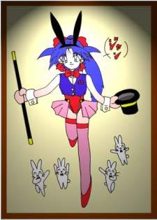
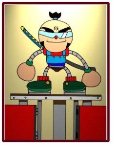
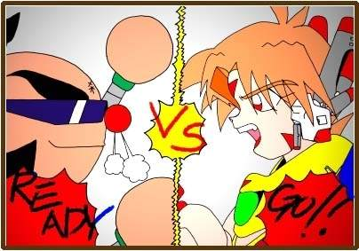
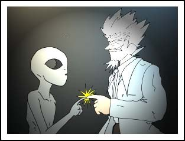
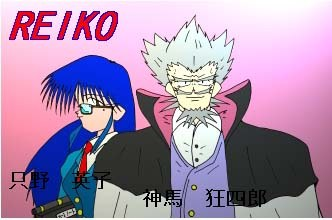
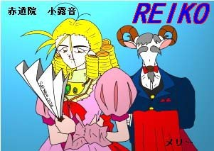
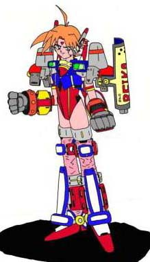
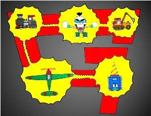
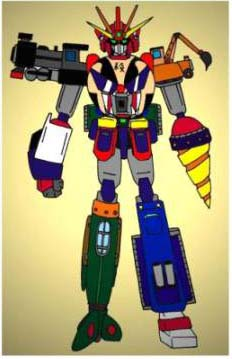
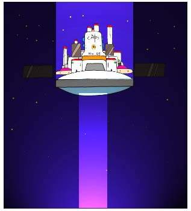

＜実験小説＞
その二

（鈴）みなさ〜ん こんにちはぁ〜〜〜っ
あれっ？声が聞こえないなぁ〜？
では、もう一回行きますよ！
こんにちはぁ〜！
う〜〜ん聞こえないなぁ〜？
このページは、音声認識プログラムを使っています。
マイクに向かって挨拶をしてくれると、私が服を脱ぐ仕掛け・・・
（ぱこん）
（角さん）鈴、お前、何恐ろしい事言ってんだ！（ウソですよ！）
（鈴） いたたたたっ・・・ あっ角さん、こんにちはっ
（角さん）挨拶はいいからさっきのはなんだ！！
（鈴） えっこれは、さっきオヤジさんにもらった原稿をそのまま読んだだけですよ〜〜っ
（角さん）くそ〜っ、オヤジめ勝手な事しやがって。まさか今回鈴に、看護婦さんの服を着せな
かったからその腹いせか？（ブツブツ）
（鈴） あの〜、そんな事どうでもいいですから、早く話し進めましょう。
（角さん）そうだなっ、今回は、俺の趣味に走ったお話だ！
（鈴） 角さんの趣味って何なんですか？
（角さん）う〜〜む、趣味って言うのは、メカモノだ！！
も〜〜ロボットが、ギッコン、ガッコン動いてたら嬉しくって嬉しくって・・・（ウルウル）
（鈴） じゃあ、角さんはどんなメカが好きなんですか？
（角さん）旋盤！
（鈴） ・・・・・・・じゃあお話行ってみましょう！
（角さん）おい鈴、俺の話を聞け！！この俺の旋盤に対する熱い気持ちを！！
（鈴） そんな工業系の事話しても誰も解りませんよ！
（角さん）そうか・・・・（シクシク）
（鈴） では、改めてお話に行ってみましょう！！
（角さん）その前に、前説書いてあるのできちんと読んで考えてから、お話読んでくださいね！
前説
ここに、一人の人間が、欲望のままに造った一つの道があります。
その道は、
ある人には、懐かしさと笑いを、
ある人には、怒りと憎悪を、
そしてある人には、その道すら気付かないでしょう。
ここに、二つの選択肢を用意しました。
一つは、このまま道を進むもの、もう一つは、道を戻るもの、どちらを選んでもあなたの自由です。
でもあなたに、ほんの少しの優しさがあるのなら、この道を進んであげてください。
そのことで、この道を造った人間が救われるのですから・・・
＜時は、２０９９年＞
１９９０年代後半に、ＯＮＤＡ技研が開発した汎用人型ロボット。
２０００年代に入り、次々と進化を続けるロボット達、陸、海、空、そして宇宙までも、彼らは、活躍の場
を広げていた。
月日は流れ、
現在、さらなる技術革新の為に、人々は新しいモータースポーツを発明した。
それは、フォーミュラー・ロボット・ファイト、通称ＦＲＦ、この新しいエンターテイメントに人々は熱中
した。
ＦＲＦとは、２０ｍ四方の四角いリングで戦う、ロボット同士の格闘技。
ルールは単純、相手を破壊するのみ、そのためにどんな武器を使用しても良いという壮絶なファイトである。
しかし、ロボットは無線で外部から操作するので全くと言って危険性はない。
そして、今ＦＲＦ最大とも言えるファイトが始まろうとしている・・・・
ＲＥＩＫＯ：ＯＰ 作詞 オヤジ
ファイヤー ファイヤー ファイヤー 燃え上がれ〜〜
クラシュ クラシュ クラシュ 破壊しろ〜〜〜
愛だ 勇気だ 友情だ 男のロマンを追い求め
来たぞ僕らの狂四郎〜〜〜〜！！
（セリフ） オヤジさんこんないい加減な歌でいいんですかぁ〜〜
別にいいじゃろ、どうせいい加減な話なんじゃから。
ジャムパン 食パン ロールパン 嗚呼っ僕らの狂四郎〜〜〜
＜タイトルコール＞
超格闘ロボットヒーロートランスセクシャル熱血伝
ＲＥＩＫＯ（０−号）
（作：角さん）
第一話 ＲＥＩＫＯリングに立つ！ ＜必殺のマグマブースト＞
アナウンサー： とうとう、１０日続いたＦＲＦ大会も最終日、今日は、どんな白熱したファイトを見せてくれるのでしょう。
（テンションの上がるＦＲＦ会場、その前の巨大スクリーンを、じっと見つめる少年。この１２才の少年こそが、今回のお話の主人公、熱血 漢（ねっけつ かん）である。）
漢： あー、早く大人になってＦＲＦ大会に出られるようなパイロットのなりたいなぁー。
（スクリーンを見ながら独り言を言っている漢に一人の老人が話しかける。）
謎の老人： 少年よ、お主ロボットのパイロットになりたいのか？
漢： うん！俺の夢は、ロボットのパイロットになってＦＲＦ大会で優勝する事なんだ！
（その少年の熱い瞳には、ＦＲＦに対する確固たる信念を感じさせるものがあった。）
謎の老人： うむっ、少年よわしが、主の夢を叶えてやってもいいぞ！！
漢： 本当！！
謎の老人： わしについてくれば解る。（キラーン！ 老人の目が妖しく光る）
＜同時刻：ＦＲＦパイロット控え室＞
メリー： お嬢様、そろそろコックピットルームに向かいませんと・・・
小露音： お黙り、メリー！ひつじの分際で、この赤道院 小露音（せきどういん ころね）に指図するつもり？私は今、ティータイム中よ！それに今回のロッボトは、赤道院グループが総力を挙げて開発した最新型よ、どんな相手だろうと秒殺よ！
メリー： しかしお嬢様、ロボットを調整無しで、いきなり試合に出すなど無茶すぎます。せめて今からでも、コックピットに入ってならしだけっでもやっておくべきです。
小露音： 調整？ならし？フンッこの大天才の私にそんなもの必要ないわ！そんなものは、そこらの凡人がやるものよっ！！オ〜〜ホッホッホッホッホッホッ！ヒッ！ゲホッゲホッ（紅茶が気管に入ってむせる）
メリー： おっ、お嬢様・・・・（シクシク）
（角さん： ここでひつじのメリーとは、羊ではなく山羊と言っておこう！ 鈴： 無茶苦茶ですねぇ〜）
＜ＦＲＦコックピットルーム＞
漢： じーちゃん、俺本当にパイロットになれるのか？
謎の老人： ノープロブレム、全てわしにまかせとけ！それにわしは、神馬 狂四郎（しんま きょうしろう）博士じゃ！これから博士と呼ぶように！！
漢： うん！
狂四郎： ちが〜〜う！返事は、ラジャーじゃ！！
漢： らっラジャ〜 （狂四郎のノリにとまどう漢）
狂四郎： う〜〜〜む、燃えるのう、それじゃあ漢君そこのコックピットに入るのじゃ！！
漢： ラジャー！！
バシュウ！！ （コックピットのハッチが開きそこに入っていく漢）
狂四郎： くっくっくっ、うまくいった・・・・ （キラーン、キラーン 両目点灯）
女： 狂四郎様、こっちは、スタンバイ出来てます。
狂四郎： うむっ、では始めようかＡ子、いや英子君
（鈴： オヤジさんもっとましな名前考えてあげてくださいよ〜 オヤジ： 別に名前なんてどうでもいいじゃろう！ 鈴： あぅ〜手抜いてますね〜〜）
英子： では、パイロットを拘束します。
狂四郎： うむっ！
ガシャン！ （コックピットの鍵が閉まり、漢の座った椅子から次々と拘束具が出てくる）
漢： 何だこれは、手が足が押さえられる。モガーッ
英子： スキャニング開始します。視覚、聴覚、嗅覚、味覚、触覚、脳波、スキャニング終了、網膜登録終了。狂四郎様パスワードを、
狂四郎： パスワードは、熱血ファイヤーじゃ！！
英子： パスワード入力終了しました。
（英子の激しいキー操作によって、端末に様々なデーターが入力されていく）
英子： 狂四郎様、すぐにでも起動できます。
狂四郎： よろしい。では、試合会場に行くぞ！！
英子： ラジャー！ （英子は、狂四郎に向かって敬礼をする）
＜ＦＲＦパイロット控え室＞
小露音： メリーそろそろ、私のニューマシーンに乗りに行くわよ！！
メリー： はい、お嬢様。
アナウンサー： チームレッドライン、チームギガンティック、両パイロットスタンバイ出来ました。それでは、只今よりＦＲＦ大会決勝戦を開始します。
小露音： なぬ〜〜、メリー今の放送なんて言った？パイロットの私がここに居るのに、なんでスタンバイ出来てんのよ〜〜！！
メリー： お嬢様、私には解りかねますが・・・
小露音： とりあえず、試合会場に行くわよ！！
メリー： はい、お嬢様。
＜ＦＲＦチームレッドライン・セコンドルーム＞
＊ＦＲＦでは、試合中、常にパイロットをホロー出来るようにセコンドがつくことが許されている。
狂四郎： むぉほっほっほっほっほっほ〜〜〜っ、ＦＲＦ会場は、いつ来ても熱気があって男心をくすぐるのう！
英子： はい、狂四郎様。
狂四郎： これから、我が、超天才神馬狂四郎の華麗なるショーが、開幕されるのじゃ！むぉ〜ほっほっほっほっほっほっ〜〜〜
小露音： ちょっと待った〜〜〜〜！！あんた達、ここでなにやってんのよ〜！ここには、あんた達一般人が入ってこれる所じゃないのよ！！ただちに出て行きなさい！！
狂四郎： フンッ、キャンキャンとうるさい小娘じゃのう
小露音： 何ですって、この赤道院グループの令嬢であり、このチームレッドラインのメインパイロットの赤道院小露音を小娘呼ばわりするなんて、あんたこそ、何者よ！！
メリー： お嬢様、この方は、今回のニューマシーンの、設計開発をなされた、神馬狂四郎様でございます。
狂四郎： そこのヤギ！！わしの名前の前に超天才をつけるのを忘れ取るぞ！！
小露音： そんなことどうでもいいのよ！！ジジィ、なんで私のマシーンが、すでにスタンバイ出来てんのよ！！この大天才、赤道院小露音が居ないとスタンバイ出来ないでしょう！！ムキャーー！！
（小露音は、怒りにまかせてじたんだを踏む）
狂四郎： 心配には、およばん。パイロットの登録は、すでに変更してある！ ニヤリッ
（狂四郎は、不適な笑いをする）
小露音： 何勝手な事してんのよ〜〜〜！！ （小露音は、狂四郎の胸ぐらをつかむ）
英子： 狂四郎様、そろそろ試合が始まります。
狂四郎： 小娘、その汚い手をどけろ！これから人類が何十年かかっても開発できない技術を見せてやろう！！
小露音： こっこの、白魚のような、私の手が汚いですって！！ （狂四郎の言葉にショックを受けて小露音はフラフラと倒れ込む）
（そうこうしてる内に、四角いリングの中央にスポットライトが落ち、レフリーが登場する）
レフリー： それでは、只今より、チーム・ギガンティックＶＳチーム・レッドラインのＦＲＦ決勝戦を始めます。まずは、赤コーナーチーム・ギガンティック、マシンはギャラクティックメテオ、パイロットは、５０戦無敗の熱血 心！！（ねっけつ しん） そしてその無敗神話を終わらせることが出来るのか？青コーナーチーム・レッドライン、マシーンは、０−号・・・・・
狂四郎： ちょっとまったぁ〜〜！！（マイクを持った狂四郎の声が場内に響きわたる）
狂四郎： わしが造ったマシーンの名は、ＲＥＩＫＯじゃ！！
小露音： ちょっとジジィは、黙ってなさい！！（小露音は、狂四郎からマイクを奪い取る）
小露音： でっ、パイロットは誰なのよ！！
レフリー： えっと、パイロットは、今日がデビュー戦！期待の新人、熱血漢！！
小露音： 誰よそれ〜〜〜！！
狂四郎： うむ、わしがさっき会場前で拾ってきた少年じゃ！
小露音： そんな素人をパイロットにしてどうするつもりよ！！
狂四郎： 心配無用じゃ！！ ギラーン（両目点灯ハイライト）
小露音： ギャッ！まぶしい、対向車が居るときは、ローライトにしなさい！！（意味不明）
（小露音と狂四郎の漫才をよそに話は進んでいく・・・）
レフリー： それでは、赤コーナーギャランティックメテオの登場です！
（リング上にスモークがたかれ、音楽が流れ出す。）
バシュウ！！
（上から下へ、スクロールさせると気分出るかも）

（コーナーポストが二つに分かれ、ロボットがせり上がってくる。）
小露音： ブッ！！なによあのロボット、この私をなめてんの？私、あんなのと戦わなくちゃいけなかったの？あのロボット、完全に名前負けしてるわよ！！
（オヤジ： おいっ、おっさん手抜くなよ〜）
（角さん： オヤジに、おっさん呼ばわりされたかね〜よ！それに絵の方は、俺に任すって言ったじゃないか！！）
（オヤジ： しかし、コ〇助は、まずいじゃろう。）
（角さん： ちが〜〜う！！ギャラクティックメテオだ！！）
レフリー： 次に、青コーナーＲＥＩＫＯの登場です！！
（すかさず、狂四郎がマイクを握りしめ叫び出す）
狂四郎： テーマソングカモーン！！ファイヤー ファイヤー 燃え上がれ〜〜・・・
小露音： あんたが、歌うんかい！！ （ツッコミ）
英子： 狂四郎様、ＲＥＩＫＯスタンバイＯＫです。
狂四郎： よし、英子君ＲＥＩＫＯ起動じゃ！！
英子： はい、狂四郎様。パスワードをどうぞ。
狂四郎： 熱血ファイヤーでマインドインじゃ！！
英子： パスワード承認しました、マインドインします。・・・・・・・・ＲＥＩＫＯ起動します。
バシュウ！！
（上と同じで、上から下へとスクロールさせると気分出るかも）
（コーナーポストが二つに分かれ、その中からロボットがせり上がってくる。）
狂四郎： どうじゃ！これが、わしの長年にわたって研究開発してきた、精神挿入システムを導入した。ロボット、ＲＥＩＫＯじゃ！！ ビカーッ！！（狂四郎の目がフラシュする。 ひつこいか）
狂四郎： さあっＲＥＩＫＯ！目を覚ますのじゃ！！
（ウィーンと言う機械音とともに、ＲＥＩＫＯの目がゆっつくりと開いていく）
漢： んっ？ここは、どこだ？俺は、何してたんだっけ？
狂四郎： 目覚めたか少年よ！どうじゃ、夢にまで見たＦＲＦのリングに立った気分は？
（漢は、インカムからの通信を聴き辺りを見回す）
漢： わっ、なんで俺は、リングの上に立ってんだ？！
英子： 狂四郎様、ＲＥＩＫＯへの精神挿入は、うまくいったみたいですね。
狂四郎： うむっ、そのようじゃな。
小露音： ちょっと、あの女の子は何よ！！ＦＲＦは、ロボットしか出場できないはずよ！！
狂四郎： 何を言っておる！あれが、わしが開発したロボットじゃ！！
小露音： どう見たって、女の子じゃない！！
狂四郎： う〜〜む、それには理由があるのじゃ。
小露音： どんな理由があるのよ！
狂四郎： とうとうこの事を、話さなければならぬ時が来たか・・・・
英子： 狂四郎様・・・・・
狂四郎： 英子君いいんじゃ、いずれ話さなければならぬ事なのじゃから・・・・
（と言いながら、マイクを握りしめる狂四郎）
狂四郎： わしには、幼い一人息子がおった・・・しかしその息子は、二年前事故で命を落としてしまった。それからわしは、生きる目標を失ってしまった・・・なぜなら、息子の成長だけがわしの、唯一の喜びじゃったからだ・・・だからわしは、その息子そっくりのロボットを制作した。それが、あのＲＥＩＫＯなのじゃ！！
狂四郎： 跳夫〜〜、とびおぅぅ〜〜 とうとうわしの元に返ってきてくれたのじゃなぁ〜〜〜！！ うおおおおおぅ〜〜〜っ
（狂四郎は、滝のような涙を流す。）
狂四郎： でっ、でも、あいつは跳夫じゃないんじゃ〜〜！！
バコン （小露音が、狂四郎を殴る）
小露音： 当たり前じゃない、なんで息子に似せて造ったロボットが、女の子になってんのよ〜〜！！
狂四郎： うむ、初めは、息子に似せて造っていたのじゃが、造っている内に、少々わしの趣味が入ってしまったようじゃ。テヘッ （そう言いながら舌を可愛く出す狂四郎）
英子： も〜〜〜、狂四郎様の、お茶目さんっ。 （と言いながら、英子は、狂四郎の額をつつく）
小露音： お茶目さんじゃなぁ〜〜い！！ あんたが、ロボット造るのに家が、いくら出資したかわかってんの！！
狂四郎： フン、この大会でＲＥＩＫＯが優勝できれば問題ないじゃろ！！
小露音： まっまぁそうだけど・・・
狂四郎： よし、漢君いや、ＲＥＩＫＯよ、あのロボットを倒してこの馬鹿娘を見返してやるのだぁ〜〜！！
漢： うんっ、わかった！！
狂四郎： ちが〜〜う！！返事は、ラジャーじゃと言っておろうが！！
漢： ラッラジャー
レフリー： なんだか前置きが長くなってしまいましたが・・・
フォーミュラー・ロボット・ファイト！！

カーーーーン！！
漢： 今日、こんな形で兄ちゃんと戦える事になるとは、思わなかったぜ！！５日前、俺が隠しておいた大福を勝手に食った礼を、今こそしてやるぜ！！
心： フン、弟の分際でこの俺にたてつこうとは、いい度胸だぜ！！それにあの大福は、腐ってたぞ！そのおかげで俺は、三日間下痢で悩まされたんだぞ！！
狂四郎： ぬおお〜〜なんたる悲劇！血を分けた兄弟が、憎しみ合い戦うことになろうとは・・・しかし、これは、これで燃えるぞ〜〜！！
狂四郎：これこそ、男のロマ〜〜ン！！
漢： 行くぞ兄ちゃん！！
心： こいっ、バカ弟よ！！
心＆漢： うおおおおお〜〜〜〜っ！
ゴン！！

小露音： って、いきなりやられてんじゃないのよ！！
狂四郎： う〜〜む、おかしいのう。精神挿入システムは、ちゃんと働いとるはずなのに。
英子： 狂四郎様、やはりいきなり素人の少年をパイロットにしたのが間違いだったのかも・・・
狂四郎： いやいや、英子君少年パイロットと言うのは、なぜかロボットの操縦方法を知っているという、不思議な力をもっとるのじゃ！！やはり、精神挿入システムかのう？
小露音： ちょっと、その精神挿入システムってなによ〜〜！！
狂四郎： 説明しよう！精神挿入システムとは、ロボットに己の精神と五感、視覚、聴覚、嗅覚、味覚、触覚を、挿入するシステムじゃ！！まぁ、簡単に言えば、今のＲＥＩＫＯの体に、漢君の魂が、入っている状態になっているという事じゃ！！
小露音： すっ凄いじゃない！あんた結構凄いのねっ！！
狂四郎： うむっ、誉めてもらって嬉しいのじゃが、実は、このシステムわしが開発した物じゃないんじゃ！
小露音： このシステムは、背の小さい、銀色の全身タイツを着た、目の大きな奴にもらったものなのじゃ！！これがその写真じゃ！
＜スクープ！！宇宙人と、狂四郎様＞

（撮影：只野 英子）
小露音： 宇宙人にそんな物もらうなぁ〜〜！！
英子： 狂四郎様、そんな事よりＲＥＩＫＯが大変なことになってますけど・・・
狂四郎： なにっ！！
心： あ〜はっはっはっはぁ〜〜〜っ！どうした漢！やはりこの偉大なる兄を、越えることは、出来ないか？
狂四郎： 漢君どうした！ぬしの力は、そんな物だったのか？
英子： 狂四郎様、やはりノーマル装備で出したのは、無理があったのかも・・・
狂四郎： しかし英子君、フル装備で出して、いきなり勝っても面白くないじゃろう！
英子： さすが、狂四郎様。そこまで考えていらっしゃったとは・・・
小露音： いきなり勝ってもいいのよ！！
（小露音達が話をしている間、ＲＥＩＫＯはメテオにボロボロにされていた）
心： どうした漢よ、この俺様に手も足も出ないのか？
漢： くそぉ〜〜
心： ピカーーン！（心の頭の上に豆電球が出てきて光る）
心： フッフッフッ、弟よ！俺は、今すばらしい事を思いついたぞ！！
漢： なんだよ兄ちゃん・・・（兄の不敵な笑いにおびえる漢）
心： 第一回 とうとうやります萌え萌えコーナー
（一人盛り上がる心）
心： 弟よ、ありがたく思え兄がお前の成長を調べてやる！！おっとその前にその服が邪魔だなぁ〜〜
（と言いながらメテオは、丸い手を器用に使いＲＥＩＫＯの服を破いていく・・・）
ビリビリビリビリーー（ＲＥＩＫＯは、メテオのなすがままに服を脱がされていく）
漢： やめろ〜〜！兄ちゃん！！（もはや漢の声は、兄には届いてない・・・）
心： いやがる女の子の服を無理矢理破く！！う〜〜む、萌える、萌え萌えだぁ〜〜っ！！
ビリビリ （とうとう半裸の状態になってしまったＲＥＩＫＯ）
（リング上でおこなわれている、ストリップショーを見て観客は、否が応でも盛り上がる）
狂四郎： 兄によって服を破られ、自分の胸にあるふくよかなふくらみをまの当たりにした彼は、自分が女だと自覚せねばならなくなった。そう思うと兄の前で胸をはだけている自分が恥ずかしく、そして情けなく思えてならなかった・・・
英子： いやっ、やめてお兄様・・・
狂四郎： グッフッフッ、いいではないか、俺達兄弟だろ・・・
英子： でも・・・
狂四郎： それに、俺達、男同士恥ずかしがることは、無いだろう・・・
英子： あああん、お願いもう許して・・・・
小露音：
って、勝手にナレーションを入れるんじゃない！！
漢： は、博士！俺一体どうしたらいいんだよ〜〜！（兄に服を破られてしまい、半裸でオロオロする漢）
狂四郎： うむ、漢君安心しろ、わしはこう言う時のために必殺技を、用意しておいた。いいか、わしの言う事を良く聴きたまえ、まぁ〜ず両腕をクロスして胸に当てる、そして反転しながら片足を、後ろに跳ね上げこう叫ぶのじゃ！！
（漢は、狂四郎に言われるまま、ポーズをとると、狂四郎と共に叫ぶ！）
漢＆狂四郎：
いや〜〜ん、まい〇んぐ！！
小露音： ガビ〜〜〜〜〜〜〜〜〜〜〜〜〜〜〜〜〜〜ン
場内： ガビ〜〜〜〜〜〜〜〜〜〜〜〜〜〜〜〜〜ン
あなた： ガビ〜〜〜〜〜〜〜〜〜〜〜〜〜〜ン
（静まり返るＦＲＦ会場の中で１ラウンド終了のゴングが鳴り響く・・・・）
＜アイキャッチ＞

（鈴） ふう〜〜っ、やっと半分ぐらいすみましたね〜ここでちょっと一休み、この実験小説の隠しパラ
メーター、オヤジさんと話していこうと思います。
（オヤジ）コンニチハ、ワタシガ、オヤジデス。
（鈴） オヤジさん、なんで片言なんですか？
（オヤジ）いや〜なんかこう言う所に出るのって、ぼっけー
はずかしくってな〜っ
（鈴） そうですか、角さんなんか喜々として出ているのに・・・
（オヤジ）あいつ、頭のネジ抜けてるからなー
（鈴） 無茶苦茶言ってますねー。後でどうなっても知りませんよ！
それより、オヤジさんは、この実験小説で何やってるんですか〜？
（オヤジ）そんなこといちいち言わなくても、お前知っているだろう。
（鈴） 私は、知ってますけど、モニターの前の人は、知りませんよ。
（オヤジ）しょうがねーなー、わいは、この実験小説でキャラクター設定と、アイデアを出している
わけだ。お前のキャラ設定の、わいがやってる。
（鈴） えっ！私の設定ってどんなのですか？
（オヤジ）簡単に言うとお前は、１３才でいつも、ぽん刀持っている危ない女の子って設定だ！
（鈴） グァ〜〜ン！！私って、危ない人っだったんですね〜〜（シクシク）
（オヤジ）おい鈴、話が進まなくなるからそこで落ち込むなよ〜〜！ほら飴やるから・・・
（鈴） はいっ（ニコニコ）
でっ、オヤジさんも角さんと同じで、メカモノ好きなんですか？
（オヤジ）お前、結構げんきんだな！まあいいか、わいもメカモノ結構好きだぞ！
（鈴） でっどんなメカモノ好きなんですか？
（オヤジ）フライス盤
（鈴） ・・・・・・・では、後半戦行ってみましょう！！
（オヤジ）おい、ちょっとは、つっこめよ！！フライス盤は、旋盤と違って平面研削が・・・・
スパン！（鈴が、はりせんでオヤジを叩く）
（オヤジ）あうっ！
（鈴） 切り捨て御免です！ではっ、後半へどうぞ！！
＜アイキャッチ＞

＊ＦＲＦでは、１ラウンド１５分、その後５分間のインターバルがおかれる。その５分の間で、ロボットのメンテナンスや、セッティングの変更などが行われる。
＜チーム・レッドラインメンテナンスルーム＞
アナウンサー： こちらは、ピット作業中の、チーム・レッドラインです。さて作業の方は、どうなっているんでしょう。
（メンテナンス用の椅子に座る、ＲＥＩＫＯを囲む狂四郎達。）
狂四郎： う〜〜〜む、ＲＥＩＫＯの超化学繊維で造ってある服を破るとは、５０戦無敗というのは伊達じゃないのう。
小露音： 超科学繊維って何よ！
狂四郎： いちいちうるさい小娘じゃのう、超科学繊維とは、ナイロンと、ポリエステルを、絶妙なバランスで織り込んだ未来の繊維じゃ！！
小露音： ただの合成繊維じゃない！！
狂四郎： 何を言っておる。昔は、ダイキャストで出来たおもちゃを超合金と言って売っていたんじゃぞ！！
小露音： あんた本当にあのロボット開発したの！
狂四郎： もちろんじゃ！では、ＲＥＩＫＯのメンテナンスをするぞ！！
（と言いながら、狂四郎はＲＥＩＫＯの胸をわしづかみにする。）
漢： うひゃあっ！！
小露音： ちょっとあんた、いきなりなにしてんのよ！！
狂四郎： うるさい黙ってろ！！これは、とても重要な検査なのじゃ！！
狂四郎： では、右胸を三回！（もみ、もみ、もみ）
漢： うんっ
狂四郎： そして、左胸を四回！（もみ、もみ、もみ、もみ）
漢： はぁ〜〜〜〜〜〜〜んっ
狂四郎： さらに右胸を、右に二回転！！（グル、グル）
漢： あっあ〜〜〜〜ん！！
狂四郎： 最後に、上、上、下、下、左、右、左、右、Ｂ、Ａじゃ！！！
（ぐに、ぐに、ぐに、ぐに、ぐに、ぐに、ぐに、ぐに、つん、つん）
漢： ああああああああ〜〜〜〜〜〜〜ん！！
（狂四郎に胸を揉まれ、今まで感じたことのない快感を感じた漢は、顔を真っ赤にしながら、狂四郎の攻めに耐えた・・・）
狂四郎： う〜〜〜む！！わかったぞ！！
小露音： でっ、なにがわかったのよ！！
狂四郎： ＲＥＩＫＯの感度は、良好って事が解ったぞ！！
小露音： なっ、何の検査をしてるのよ〜〜〜！！
ドカッ、ドカッ、ドカッ、ドカッ・・・・・
（１３ヒット、小露音のコンボつっこみ炸裂！！）
メリー： お嬢様、気を静めてください・・・・
英子： ああっ！狂四郎様ぁ〜〜！！
小露音： 殺してやる、殺してやる、殺してやる・・・フーッフーッ！！
アナウンサー： とっ、終始和やかな雰囲気で、メンテナンスが行われています。
小露音： どこがじゃ〜！！
ドカンッ！！
アナウンサー： ゴフッ！！
＜ＦＲＦ会場＞
レフリー： これより第２ラウンドを、開始します！両チーム、ピットアウト！！
バシュウ！！（１ラウンドと、同じく両コーナーからそれぞれのロボットが出てくる。）
レフリー： 第２ラウンド、ＲＥＡＤＹ ＧＯ！！
カーーーン
＜ＲＥＩＫＯ、武装バージョン＞

心： あ〜〜はっはっは〜！！よく逃げずに出てきたな！漢！！漢： このラウンドは、前のようには行かないぞ！！
心： 武装したからと言って、この俺に勝てると思っているのか！！
漢： 勝ってみせるさ！！
心＆漢： いくぞ！！
狂四郎： うおおおおお〜〜！！燃える、燃えとるのう！！
小露音： なんかやっとまともになったみたい・・・
心： くらえ〜〜〜！ギャラクティクパァーーンチ！！
ガシーン！！（ＲＥＩＫＯがメテオのパンチを受け止める。）
漢： ＲＥＩＫＯの力は、人間の６６６６倍、そんなパンチ屁でもないぜ！！
心： ならこれでどうだ！！ギャラクティカルビーーーーム！！
（メテオのグラサンが上がり、そのつぶらな瞳からビームがほとばしる）
漢： あま〜〜〜〜い！！鏡面シーールド！！
（ＲＥＩＫＯの前面に鏡が現れ、ビームを反射する）
心： くそ〜〜〜！なかなかやるな、漢！！
小露音： なんであいつ等、技の前に、技の名前言ってんのかしら？
狂四郎： フン！！小娘貴様には、男のロマンというのが解ってないようじゃな！！技を叫ぶ、これこそ男のロマ〜〜〜〜〜ン！！よし、漢君そろそろ反撃だ！！
漢： ラジャー！！くらえ〜〜！！ロケットグロ〜〜〜ブ！！
（漢の叫び声と共に、右手のロットグローブに火がつく）
ブオオオオオ〜〜〜ッ！！
（その炎は、ＲＥＩＫＯの体を燃やしながら、ゆっくりと右手から離れていく・・・）
漢： うわちゃちゃちゃちゃ〜！はっ博士、熱い熱い！！
狂四郎： 漢君すまん！使い捨てのロケットパンチにすると、腕が無くなってしまうから、グローブにしたのじゃが、こんな落とし穴があろうとは・・・・
小露音： それよりロケットグローブは？
ドカシャーン！！
（轟音と共に、メテオの左手が吹っ飛ぶ）
心： ぐううううっ！！漢めよくもこの俺の、愛らしいロボットに傷を付けてくれたな！！
小露音： ホ〜〜ホッホッホッホ！！どうこの私の力は？
狂四郎： 小娘ぬしは、何もしてないじゃろうが！！
小露音： フン、いいのよ！漢君の手柄は、私の手柄。私の手柄は、私の手柄！！
狂四郎： ジャイ〇ン（ボソ）
心： 漢、どうやら俺を、本気させたようだな！！見て驚け！！カモーンギャラクティックマシーン！！
（心の叫び声と共にどこからともなく四台のギャラクティックマシーンがリングに上がってくる）
ギャラスチーム （汽車） １号機 蒸気機関の力持ち
ギャラドリル （ドリル） ２号機 トンネル掘りが大得意
ギャラファイター （飛行機） ３号機 大空の王者神風ファイター
ギャラショベル （パワーショベル） ４号機 土木工事に必要不可欠
小露音： なっなっなっなによあれ！！ＦＲＦはロボット同士の戦いじゃないの〜〜！しかも、５対１なんて卑怯よ！！
狂四郎： まてっ、心が男ならあれをやる・・・・
心： ジジィ、良く解ったな！！
行くぞ、ギャラクティカルドッキング！！
（ギャラクティックメテオを中心に、次々とギャラクティックマシーンが、大空に舞い上がる）

（どこからともなくオーケストラが出てきて合体のテーマを演奏する）
狂四郎： 熱血心、奴も男だったか・・・・
ガシン！ ガシン！ ガシン！！
（大空に舞い上がった、ギャラクティックマシーンは、次々とメテオにドッキングしていく）
心： 超銀河熱血合体 ギャラクティックメテオＭＳＸ
ババーーーン！

小露音： げげっ！合体しやがった！！しかも縮尺、目茶苦茶じゃない！！狂四郎： うむっ、合体ロボとは、得てしてそう言うもんじゃ！
心： このパワーアップしたギャラクティックメテオの力を見せてやる！！くらえ〜〜ドリルクラッシャ〜〜！！
（メテオの、左手のドリルが回転し、ＲＥＩＫＯに襲いかかる）
漢：兄ちゃん、このＲＥＩＫＯの強化装甲（今度は、ガンダニ〇ム合金（笑））をそんなドリルで貫けるもんか！！
ガリガリガリガリ（ＲＥＩＫＯが、メテオのドリルを、左手のアームガードで受け止める）
心： 漢よ、このメテオのドリルをなめるなよ！
キィィィィィィーーーーン！！
（メテオのドリルが、熱を帯びかん高い音を鳴らし出す）
ビーッ、ビーッ、ビーッ、ビーッ！！
英子： 狂四郎様、ＲＥＩＫＯの腕部、強化装甲が、分子分解し始めています・・・
狂四郎： なんてこった！！奴め、超振動ドリルを使っているのか！！
バキーン！！（轟音と共に、ＲＥＩＫＯの左手の、アームガードが吹っ飛ぶ）
漢： うわああああーっ！！
（コーナーポストまで吹っ飛ぶＲＥＩＫＯの前に、立ちふさがるメテオ）
心： そろそろ、とどめを刺すか・・・
（メテオは、ＲＥＩＫＯにドリルを向けて、じりじりと詰め寄る）
小露音： どうすんのよ〜〜このままじゃやられちゃうじゃない！！
狂四郎： 心配するな、小娘！ピンチの後には、勝利ありじゃ！！
狂四郎： 英子君、リミッターを切るぞ！！
英子： はい、狂四郎様！ （カタカタと端末に、データーを打ち込む英子）
英子： 狂四郎様、準備が出来ました。リミッター切断のための、パスワードを入力してください。
（と言いながら、狂四郎にマイクを渡す）
狂四郎： では、いくぞ！！
英子： はい！
狂四郎： この男女、お前なんか男女の、富子だ！！
狂四郎：と〜み〜〜こ〜〜〜！！
（狂四郎の声が、会場にこだまする）
ブチン！！
英子： ＲＥＩＫＯのリミッターが切断されました・・・
漢： うおおおおおおおおおーーーーー！！
（漢の雄叫びと同時に、メテオのドリルがＲＥＩＫＯを襲う）
小露音： きゃ〜〜〜やられる！！
狂四郎： 無駄じゃ！！
キィィーーン、ィィン、メキメキメキ、グシャァーーッ
（ＲＥＩＫＯが、メテオのドリルを、右手で受け止め破壊する）
英子： 狂四郎さま凄いです！５６７燃え、６００燃え、８３０燃え、まだまだ上がります。
狂四郎： すばらしい・・・
漢： うおおおおおおおおーーーーー！！
（ＲＥＩＯＫＯの体が、熱を帯び光り輝く）
英子： 狂四郎様、とうとう１０００燃え、いえっ１熱血を越えました・・・
小露音： さっきから、燃えとか、熱血とか何いってんのよ！
狂四郎： 説明しよう。燃えとは、カロリーや、ジュールのような、物理的熱量とは違い、わしが独自に開発した、精神的熱量のことを言う。単位換算は、１０００燃え＝１熱血じゃ！たとえて言うなら、野球の９回裏、フルカウント、フルベース、これは、約４８０燃えぐらいじゃ！
小露音： なんかいい加減な単位ね〜
狂四郎： 後、萌えと言う単位があるが・・・
ドベシ！！
小露音： 説明が、長ーい！！
英子： 狂四郎様、ＲＥＩＫＯの精神的熱量が、２熱血２３０燃えで、安定しました。
狂四郎： う〜〜む、漢君燃えとるのう！
心： うおおお〜！！この俺のドリルを、男のロマンのドリルを、壊しやがって！こんなに腹が立つのは、お前が俺の、ガ〇プラ壊したとき以来だぜ！！
（心の怒りゲージ、ＭＡＸ）
心： うおおおおお〜！！（叫んでばっか）来い、流星剣！！
（心の叫び声と共に、空から巨大な剣が降ってくる）
狂四郎： くううう〜！熱血心やりおるのう！必殺剣これも男のロマ〜〜ン！！よし、漢君こっちも必殺技じゃ！！
漢： ラジャー！熱血拳！！（漢の叫び声と共に、ＲＥＩＫＯの右手が光り輝く）
心＆漢：うおおおおおおおお〜〜〜！！
（心と漢は、必殺技モードに入る）
狂四郎： うおおお〜！！燃える、燃えとるのう！！
心： 必殺！メテオストライク！！
（メテオのバックに巨大な隕石が現れ、それと共にメテオが、必殺剣を放つ）
（しかし、それと同時に漢が叫ぶ）
漢： 俺の右手が光って唸る、お前を倒せと輝き疼く！！
漢： 今、必殺のバーニング・フィンガァ〜〜！！
（ＲＥＩＫＯの右手が、光をまとい、メテオに襲いかかる）
ズドーーーーーン！！
（爆発音と同時に、リングがおびただしい光を放つ・・・）
狂四郎： ぬうっ！
小露音： きゃ〜〜！！
英子： 狂四郎様、あれを・・・・
（英子が、光るリングの中から、黒い影を見つけて指さす）
小露音： リングの上に立ってんのはどっちなの！！
（リングの光が収まり、影の形がはっきり見えてくる）
漢： うおおおおおお〜〜！！
（リングの中央で、高らかに右手を上げるＲＥＩＫＯの、姿が見えてくる）
狂四郎： どうやら決着がついたようじゃな！
レフリー： ２ラウンド、１４分１２秒、ギャラクティックメテオ完全破壊により、チーム・レッドラインＲＥＩＫＯの勝利！！
（レフリーの判定を聴き盛り上がる会場）
小露音： やった〜！勝った〜！！うちのＲＥＩＫＯが勝ったのよ！！
（小露音が狂四郎に抱きつく）
狂四郎： こら小娘、やめんか！
英子： ああ〜っ、狂四郎様〜〜！
漢： やった〜、とうとう兄ちゃんに勝ったぞ！！
心： とうとう、俺を越えたな、我が弟よ！！
（コックピットルームから心が現れる）
漢： 兄ちゃん・・・
心： 漢！次は、負けねーぞ！！ キラーン（歯が光る）
漢： うん！！
狂四郎： うむ、うむ、美しき兄弟愛じゃのう！
小露音： さあっ、これから表彰式よ！！それからパーティにパレード！
メリー： お嬢様、すでに準備は出来てます。
ドォォォーン ドォォォーン ドォォォォォーーーン
（爆音と共に、ＦＲＦ会場が破壊され、そこから次々と人影が現れる）
声： あ〜、あ〜〜、あ〜〜〜、只今マイクのテスト中。よしっ、マイクは、使えるな！
声： 只今、現在、現時刻、このＦＲＦ会場は、我々、曼陀羅１０８神が、占拠した！！
小露音； 何々、今度は、何が起こったの！！
声： 神馬狂四郎博士、今日の試合なかなか楽しませてもらいました。あなたの科学力。我が主、曼陀羅様の為に使ってみようとは、思いませんか？
狂四郎： ぬう、貴様らなにもんじゃ！！
声： 我々は、この腐った世の中を再び無に帰し、再生するために、主！曼陀羅様の元に集まった、精鋭！曼陀羅１０８神！！
狂四郎： ふむっ、とっ言うことは、お主等は悪者じゃと言う事じゃな、そんな奴等にわしの、超科学技術は、つかわせん！！
小露音： えらい！！ジジィあんたただの、マッドサイエンティストと思ってたのに、見直したわよ！！
狂四郎： フン！この地球を破壊するのは、このわしじゃ！！
小露音： いや〜〜！！誰か、このジジィ止めて！！
声： そうか、では、あなたに死んでもらう！あなたの科学力は我々にとって驚異になりますからね。
狂四郎： わしを殺すじゃと！！よろしいその挑戦受けた！！いけ〜〜ＲＥＩＫＯよ！！わしにあだなす、悪党を蹴散らすのじゃ！！
漢： ラジャー！！
声： フン、いくら最新式のロボットとはいえ、我々１０８人のサイボーグを、一度に相手に出来ないだろう！！
漢： お前ら悪党には負けないぞ！！
（ＲＥＩＫＯに襲いかかる、曼陀羅１０８神、そこで画面にポーズがかかる）
角さん：突如現れた、曼陀羅１０８神、それを迎え撃つＲＥＩＫＯ。収拾がつかないまま、次回に続く・・
小露音： ちょとあんた、そんな事より、副題の必殺マグマブーストは、どうしたのよ！！
角さん： あっ・・・・
小露音： あんたもしかして忘れてたんじゃないでしょうね！！
角さん： まぁ、良くあることだよな！
小露音： よくな〜〜〜い！！
ズベシ！！
角さん： あううっ
＜第２話につづく＞
ＲＥＩＫＯ：ＥＤ 作詞 オヤジ
ラララ〜 科学は人を救う〜
ルルル〜 メカは未来の希望〜
ロボット導入 ライン工場 人員削減
嗚呼〜〜 リストラ〜〜〜
悪い 何が悪い 景気が悪い
嗚呼〜〜 ボーナスカァ〜〜〜ト
う〜〜 暗くなる 暗くなる〜〜〜〜 （虎マスクのＥＤみたいな感じで、）
＜あとがき＞
（角さん） ながーーーい！！ながーーい！！
自分の好きな事やっといて、言うのも何だが、なが〜〜い！！
前回の、お話のリバウンドと思ってください！！
（鈴） そんなこと言っといて、結構ノリノリで、書いてたじゃないですか〜〜
（角さん） まぁ、熱血ロボット物、書けたからな！
（鈴） 角さん、ロボット物、好きなんですね〜
（角さん） うん、最近まで、ガが三つ、付くアニメにはまってたぞ！！
（鈴） ああっ、ガ〇ャピン、がんばれ、ガンジス川、の事ですよね〜
（角さん） そうそう、ガ〇ャピン、宇宙の次は、聖なるガンジスへ！！
って、ちが〜〜〜う！！ ガが三つって、言ったら勇者王の事だろう！！
（鈴） はぁ？
（角さん） お前、知らないのか？
ゴ〇ディ〇ン・ハンマー、使う奴だよ！
（鈴） 柳生さんですね！
（角さん） お前、年ごまかしてるだろう・・・
（鈴） 角さん、ボケ合戦は、おいといて、そろそろ、おいとましましょう。
（角さん） そうだな！
（オヤジ） ちょっと、まったぁ〜〜
このまま、落ちをつけないで終わるつもりか〜〜！！
とっ、言うわけで、第２話に、マインドインじゃ！！
（角さん） すんませんが、もう少しおつきあいください。
＊長くなるので、オープニングは、省略します。
第二話 夕日に向かって走れ！＜対決！曼陀羅１０８神＞
曼陀羅１０８神： いくぞ！！
（ここで前回のポーズが解ける）
漢： 来い！！必殺、熱血インベダー！！ くらえ〜〜、名古屋打ち！！
ピキュン！ピキュン！ピキュン！！
人 人 人 人 人 人 人 人 人 人 人 人 人 人 人 人 人 人 人 人
人 人 人 人 人 人 人 人 人 人 人 人 人 人 人 人 人 人 人 人
人 人 人 人 人 人 人 人 人 人 人 人 人 人 人 人 人 人 人 人
人 人 人 人 人 人 人 人 人 人 人 人 人 人 人 人 人 人 人 人
人 ＊ 人 人 人 人 人 人 人 人 人 人 人 人 人 人 人 人 人 人
人 ＊ 人 人 ＊ ＊ 人 人
Ｉ
Ｉ
Ｉ
Ｉ
ＲＥＩＫＯ
狂四郎： う〜〜む、懐かしいネタじゃのう。
小露音： ふざけてないで、何とかしなさい！！
狂四郎： そうか、このまま１０回くらい、繰り返せば、みんな倒せるんじゃぞ！
小露音： あんた、モニターの前の人に殺されるわよ！！ そうでなくても、長いのに！！
狂四郎： そうじゃのう、仕方がない、あれを使うか！
英子： 狂四郎様、まさか、あれを使うのですか？
小露音： あれって、なんなのよ！！
狂四郎： こんな事もあろうかと（お約束）、わしが開発した、サテライトシステムの事じゃ！！ このシステムがあれば、あんなへぼサイボーグの１００人や、２００人、瞬殺じゃ！！
小露音： 凄いじゃない！！ じゃあ、さっさと、やってしまいなさい！！
狂四郎： うむっ、では英子君、準備を・・・
英子： ラッラジャ〜 （英子は、おそるおそる、狂四郎に金属バットを渡す）
小露音： ちょっと、その金属バットで何するつもりよ！！
狂四郎： うるさい！！ これから、サテライトシステムの封印を解く！！
（そう言うと、狂四郎は金属バットを振りかぶる）
狂四郎： わが、心の師、獅〇王博士に捧げる！！
ドカン、バキン、ズドン
（狂四郎が、セコンドルームの端末を、次々と破壊していく）
英子： ああ〜、私の、ラク〇キが、ぴゅ〇太が〜、カセット〇ジョンがぁ〜〜
狂四郎： 英子君、悲しむな、これも正義に為じゃ！！
英子： はいぃ〜〜 （シクシク）
狂四郎： そして、最後は・・・
（と、言いながら、目の前の、ガムテープを貼ったモニターを見つめる）
狂四郎： さぁ、皆さんもご一緒に、弾〇Ｘ、発進！！（サテライトシステムじゃないのか？）
（モニターのテープをはがし、狂四郎は、思いっきりモニターを殴る）
ドカン！ ドカン！！
＊危険なので、つられてモニターを殴らないように・・・
英子： うう〜、封印解除されました・・・
（半泣き状態の英子が、懐から、ドクロマークの付いたボタンを狂四郎に差し出す）
狂四郎： 目標、曼陀羅１０８神！
英子： 目標補足、人工衛星ＳＩＮＭＡ、サテライトビーム、発射準備できました。
狂四郎： よし！ くらえ〜〜！！ ポチッとな！
（狂四郎が、ドクロマークの付いたボタンを、ニコニコしながら押す）
＜人工衛星：ＳＩＮＭＡ＞

ビカ〜〜〜ッ！！
＜ＦＲＦ会場＞
ジュワ〜〜〜〜〜〜！！
曼陀羅１０８神： ギャァァ〜〜〜〜
ＲＥＩＫＯ： ギャァァァ〜〜〜〜
観客： ギャァァァ〜〜〜〜
（ＦＲＦ会場に、照射された太陽光は、リングと、観客席を、一瞬にして蒸発させる）
狂四郎： う〜〜む、すばらしい、破壊兵器じゃ！！ これを見ると、昔、虫メガネで、蟻を焼き殺したことを、思い出すのう。
小露音： ぎゃぁぁ〜〜！！ ちょっと、観客まで、巻き添えくってるじゃない！！
狂四郎： 絶対的な、正義の前には、多少の犠牲はつきもんじゃ！！
小露音： って、多少じゃないでしょ！！ 今日は、二万人も客が入ってんのよ！！ しかも、味方のＲＥＩＫＯも、蒸発してるじゃない！！
狂四郎： 心配無用！！ ＲＥＩＫＯは、生きとる！！
小露音： えっ？
（強力な、太陽光を浴びて、ドロドロに液状化した、リングの中央から、炎をまとったＲＥＩＫＯが立ち上がる）
漢： 俺の心は、二億六千万度だ！！
小露音： なんで熔けてないのよ〜〜！！
狂四郎： ＲＥＩＫＯの、熱血ボディーは、その熱き魂により、どんな高温にも耐えられるようになっているのじゃ！！
小露音： も〜〜〜いや！！ こんないい加減な、設定！！ （ごもっとも）
狂四郎： 曼陀羅１０８神との壮絶な戦いは、終わった・・・ 我々の勝利という形で・・・ しかしあまりにも犠牲が、多かった・・・・
狂四郎： 戦いとは、むなしいもんじゃのう・・・
小露音： 全部、あんたがやったんでしょ！！
英子： 狂四郎様、ＲＥＩＫＯが戻ってきました。
漢： 博士、俺、そろそろ元の体に、戻りたいんだけど・・・
狂四郎： う〜〜む、そうか、わしは、今のままの方が、プリチーでいいと思うんじゃがのう・・・
漢： 博士、俺は、これから男として、男を、極めようと思うんだ、だから俺を元に戻してくれ！！
狂四郎： 意志は固いかっ、では、英子君、精神挿入システム、マインドアウトじゃ！！
英子： はい！！ あっ・・・・ （英子は、端末を見て固まる）
狂四郎： どうしたんじゃ、英子君？
英子： 狂四郎様、誠に言いにくいんですが、先ほどのサテライトシステムによって、漢君の体が入った、コックピットも蒸発してしまいました・・・
狂四郎： っと、言う事は、
漢： っと、言う事は、
小露音： っと、言う事は、
英子： もっ、元に戻れません・・・・
漢： もしかして俺、一生このまま・・・
英子： はい
漢： ガビ〜〜〜〜〜〜〜ン
狂四郎： あっはっはっは〜、漢君、まぁいいじゃないか！ そんな、可愛い、女の子になった上に、最強の体を手に入れたんじゃから！！
漢： 良くな〜〜〜い！！ 俺を、男に戻せ〜〜っ！！
小露音： あ〜〜〜あっ、やっぱり落ちは、こうなるのねっ （お約束です）
声： ちょっと待て〜〜！！ そんな落ちで、終わらせぬぞ！！
（声と共に、大空に、立体映像が浮かび上がる）
声： 我が名は、アンゴルモア、１００年間の沈黙を破り、世界を破滅するために復活した者・・・
小露音： なんで、１００年前に来るはずの恐怖の大王が、今頃来てんのよ！！
アンゴルモア： あ〜〜〜、寝過ごしました・・・・
小露音： バッ、バカじゃないの、こんな、まぬけな奴が世界を、破滅できるわけ無いじゃない！！
アンゴルモア： ぬぅぅ〜〜〜、言ったな小娘！！ 私は、すでに１０５７個の核爆弾を、世界中にばらまいておるのだ！！ その爆弾は、我がしもべ、アンゴルモア１０５７将が、一人ずつ守っておる！！ 世界を破滅させたくなければ、１０５７個全ての核爆弾を止めて見せよ！！ せいぜい、私を楽ましてくれよ！！ ハハハハハ・・・・
（と、長いセリフをはきながら、アンゴルモアは、消えていく）
小露音： げ〜〜〜、今度は、１０５７将！！ １０５７人も、どうやって倒すのよ〜〜〜！！
狂四郎： 聞いたか漢君、今、世界は今までにないほどの危機が迫っておる！！ 男に戻れないなどと、クヨクヨしてる場合じゃないぞ！！ この危機を、救ってこそ、本当の男というのではないか！！
漢： う〜〜〜燃えるぜ！！ 燃えてきた！！ 博士、俺は、あの真っ赤な夕日に誓うよ、アンゴルモアは、俺が倒す！！
狂四郎： よく言った漢、いやＲＥＩＫＯよ、それでこそ男じゃ！！（なんか言ってることが矛盾してるな〜）
狂四郎： さぁ、あの夕日に向かって走ろう！！
漢： おうっ！！
（狂四郎と漢は、夕日に向かって走り出す）
狂四郎： あははははははっ
漢： あはははは〜〜〜っ
角さん： やっとの事で、曼陀羅１０８神を倒したＲＥＩＫＯ！ しかし、その勝利の余韻を味わう間もなく、最強の敵、アンゴルモアの出現！ 世界中に散らばる１０５７個の核爆弾を止める事は、出来るのか？ 戦え、ＲＥＩＫＯ！ 吠えろ、狂四郎！ 明日の、一番星に、マインドインだ！！
＜地球滅亡まで、後６０日・・・＞
第１部 完
小露音： こんな、打ち切り漫画みたいな終わり方は、いや〜〜〜〜〜〜〜〜！！
（ちゃんちゃん）
＜あとがき その２＞
（角さん） 長々と、こんなくだらない話を読んでくれて有り難うございました。
次があれば、まじめに書こうと思いますので、見捨てないでください。
今回は、ニヤリズムを意識してお話作って見たので、モニターの前で、にやりと笑って
もらえれば、幸いです。
あと、あんまり深く考えない方がいいですよ。ハゲますから・・・（笑）
（角さん＆鈴＆オヤジ） では、さようなら〜〜〜
原案：オヤジ
作：角さん
キャラクター設定：オヤジ
キャラクターデザイン・作画：角さん
アシスタント：鈴
で、お送りしました。
（おしまい）